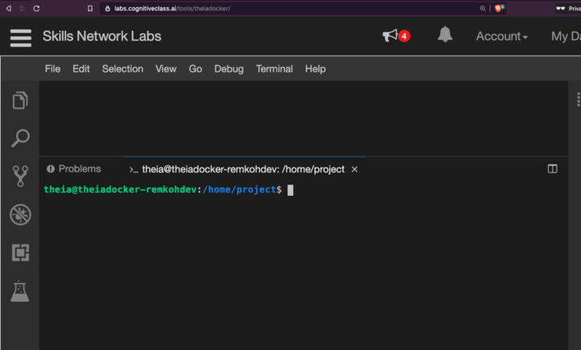
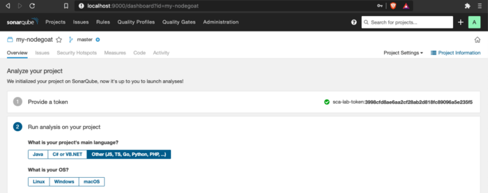

Lab 1. Get Started with SonarQube¶
Description goes here.
This section is comprised of the following steps:
- About SonarQube
- Open a Client Terminal
- Installation with Docker
- [Optional] Installation on MacOS
- [Optional] Open SonarQube Console
- Get NodeGoat App
- Setup NodeGoat Project in SonarQube
- Setup the SonarQube Scanner CLI
- Run a Basic SonarQube Scan
- Conclusion
About SonarQube¶
Security is an intimidating topic. Some parts of security are really advanced and hard, but there is a few very simple best practices to follow to secure your application. One of those is to include a tool in your DevOps pipeline, to automatically scan for vulnerabilities in your code each time you build. OpenSCAP is one such project, and SonarQube is another. Such a code scan is part of what is called Static Application Security Testing (SAST).
SonarQube is a leading automatic code review tool to detect bugs, vulnerabilities and code smells in your code. To run secure microservices and applications, it is important to fully automate security testing of your application with Application Security Testing or AST.
You can roughly distinguish three to four forms of Application Security Testing (AST):
- Static Application Security Testing (SAST) does an analysis of vulnerabilities in your code, also known as white-box testing and finds roughly about 50% of issues.
- Dynamic Application Security Testing (DAST), does not have access to your code and tests for vulnerabilities in the application flow, also known as black-box testing and is great for End-to-End (E2E) testing and pentesting, finding about 20% of issues,
- Interactive Application Security Testing (IAST), distinguishing passive and active IAST, is considered a mix of SAST and DAST with the best coverage of issues. It is sometimes also named grey-box testing, because it places IAST monitoring agents inside the application, integrates really well with CI/CD pipelines and is seen to shift-left testing,
- Software Component Analysis (SCA) testing is another way to analyze vulnerabilities in dependencies and libraries and could be included here.
In this lab, you will use SonarQube on Docker to run a SAST scan against the source code of a web app called NodeGoat. The NodeGoat project is a reference environment created by OWASP to learn how OWASP Top 10 security risks apply to web applications developed using Node.js. The Open Web Application Security Project (OWASP) is an online community that produces freely-available articles, methodologies, documentation, tools, and technologies in the field of web application security.
Steps on localhost:
- Open a Client Terminal
- Installation with Docker,
- [Optional] Installation on MacOS,
- Open SonarQube Console,
- Get NodeGoat App,
- Create NodeGoat Project in SonarQube,
- Setup the SonarQube Scanner CLI,
- Run a Basic SonarQube Scan,
Open a Client Terminal¶
This article was tested using the Theia - Cloud IDE (With Docker) client terminal from labs.cognitiveclass.ai as well as on macOS Catalina version 10.15.6. With the Theia environment you will now have access to a UI or browser, so skip the UI based options in the article and stick with the terminal, which for the purpose of this article, I recommend regardless. ;-) The value of sticking to the CLI commands, is that those will be easy to automate later as part of the developer adagium that Everything is Code.
The CognitiveClass.ai is probably the most feature-rich, self-guided, learning environment where you can earn badges in a range of topics from Kubernetes, OpenShift to Machine Learning.
To access a free client terminal environment, go to labs.cognitiveclass.ai,


Sign up and log in with your social account or signup for a free Cognitive Class account,

Once logged in, select the Theia - Cloud IDE (With Docker) environment,

This will load the Theia IDE, a free open source cloud IDE environment,

Open a new client terminal from the Terminal menu > New Terminal.

Installation with Docker¶
Using Docker to install SonarQube, you can optionally create storage volumes with Docker to prevent the loss of information,
docker volume create --name sonarqube_data
docker volume create --name sonarqube_extensions
docker volume create --name sonarqube_logs
You can verify the volumes were created successfully,
docker volume ls
which outputs,
$ docker volume ls
DRIVER VOLUME NAME
local sonarqube_data
local sonarqube_extensions
local sonarqube_logs
Then run the SonarQube container,
docker run -d --name my-sonarqube -p 9000:9000 -v sonarqube_data:/opt/sonarqube/data -v sonarqube_extensions:/opt/sonarqube/extensions -v sonarqube_logs:/opt/sonarqube/logs sonarqube
[Optional] Installation on MacOS¶
I recommend to use Docker for this tutorial (see previous step) but if you want to install SonarQube directly on localhost on macOS, you can use homebrew,
brew install sonar
brew install sonar-scanner
sonar start
Open the SonarQube console,
open http://localhost:9000/projects
[Optional] Open SonarQube Console¶
In the labs.cognitiveclass.ai terminal, you do not have access to a browser. If you’re running SonarQube in a windows environment with access to a browser, e.g. MacOS, you can open the SonarQube console in a new browser tab at http://localhost:9000/projects, login with System Administrator credentials (login=admin, password=admin).
open http://localhost:9000/projects

Get NodeGoat App¶
Clone and install the dependencies for the NodeGoat app,
git clone https://github.com/OWASP/NodeGoat.git
cd NodeGoat
npm install --save
The NodeGoat app uses a MongoDB. Edit the config file located at config/env/development.js with the file editor. In the Theia Cloud IDE you can open the file via the top menu > File > Open, then browse to the config/env folder,

Select the file development.js, and click Open,
Or if you have access to vi,
vi config/env/development.js
Uncomment the following line at line number 8,
db: "mongodb://localhost:27017/nodegoat",

From the top menu, click > File > Save, and close the file again.
Install MongoDB with Docker,
docker run --name my-mongo -d -p 27017:27017 mongo
docker exec -it my-mongo bash
> mongo
> show dbs
> use mydb
> db.people.save({ firstname: "Jane", lastname: "Doe" })
> db.people.find({ firstname: "Jane" })
> exit
# exit
Populate the Mongo database with seed data, and start the NodeGoat app,
npm run db:seed
npm start
[Optional] If you have access to a windows based environment, you can open the browser UI for the NodeGoat app at http://localhost:4000,
open http://localhost:4000
and login with credentials admin:Admin_123.

Exit running the NodeGoat app with CTRL-<C>, optionally clear your terminal.
clear
Setup NodeGoat Project in SonarQube¶
Make sure SonarQube is running,
$ docker container ls
CONTAINER ID IMAGE COMMAND CREATED STATUS PORTS NAMES
bb0f317fc67c mongo "docker-entrypoint.s…" 3 minutes ago Up 3 minutes 0.0.0.0:27017->27017/tcp my-mongo
8ba100b7a3f1 sonarqube "bin/run.sh bin/sona…" 17 minutes ago Up 17 minutes 0.0.0.0:9000->9000/tcp my-sonarqube
Or,
$ docker ps -a
CONTAINER ID IMAGE COMMAND CREATED STATUS PORTS NAMES
505b6f7da982 mongo "docker-entrypoint.s…" 3 minutes ago Up 3 minutes 0.0.0.0:27017->27017/tcp my-mongo
c885a4bdcda2 sonarqube "bin/run.sh bin/sona…" 7 minutes ago Up 7 minutes 0.0.0.0:9000->9000/tcp my-sonarqube
Create a new SonarQube project using the Web API, with display name and project key my-nodegoat,
$ curl -u admin:admin -X POST 'http://localhost:9000/api/projects/create?name=my-nodegoat&project=my-nodegoat'
{"project":{"key":"my-nodegoat","name":"my-nodegoat","qualifier":"TRK","visibility":"public"}}
Generate a user access token for your new project,
$ curl -u admin:admin -X POST 'http://localhost:9000/api/user_tokens/generate' -d "name=sca-lab-token"
{"login":"admin","name":"sca-lab-token","token":"f0d226f80f6b190e6f1accf2623e244775eb204e","createdAt":"2020-09-16T11:54:11+0000"}
Or to create the project in the SonarQube web console, under projects click the plus icon in the top right corner to create a new project, called my-nodegoat with display name and key my-nodegoat and click Set Up.

In the Analyze your project step, under Provide a token select Generate a token and enter a name for a token called sca-lab-token, click Generate,

Click Continue,

The user access token that is generated is valid for the currently active user: d51a0ffcf2eece22881537afc6f4559cf43bc633.
The NodeGoat project we are analyzing is written in JavaScript, Node.js and HTML.
As the project's main language, select Other.
As your OS, select the OS you are running under, e.g. macOS or Linux, depending on the OS of the client to run the scanner,

After you select the client OS, the console will provide you with a download option for the scanner and the alternative command to run the scanner using Docker.

Setup the SonarQube Scanner CLI¶
The preferred way to run SonarQube Scanner CLI in this tutorial is by using the Docker image (as described below), but you can also run SonarQube directly on local host.
Configure a SonarQube scan by including a properties file in the repository of your project to be scanned. In the NodeGoat directory, create a sonar-project.properties file,
cat > sonar-project.properties <<EOF
sonar.projectKey=my-nodegoat
sonar.projectName=my-nodegoat
EOF
ls -al
To use SonarQube Scanner CLI using Docker as recommended, skip the next steps and jump to the next section.
[Optional] An alternative way to run SonarQube is to install the CLI on your client. On Mac OSX, you can use Homebrew,
brew install sonar-scanner
On Linux, use the following command,
wget https://binaries.sonarsource.com/Distribution/sonar-scanner-cli/sonar-scanner-cli-4.4.0.2170-linux.zip
unzip sonar-scanner-cli-4.4.0.2170-linux.zip
echo 'export PATH=$HOME/sonar-scanner-4.4.0.2170-linux/bin:$PATH' > .bash_profile
source .bash_profile
sonar-scanner --version
Run a Basic SonarQube Scan¶
Find the IP Address on your client. On Linux,
$ hostname -I | awk '{print $1}'
172.30.84.168
On Mac OSX,
% ipconfig getifaddr en0
192.168.1.15
Set the HOST environment variable,
SONARQUBE_URL=http://192.168.1.15:9000
Run the scanner from the Docker image,
$ docker run --rm -e SONAR_HOST_URL=${SONARQUBE_URL} -e "SONAR_PROJECT_KEY=my-nodegoat" -v $(pwd):/usr/src sonarsource/sonar-scanner-cli
...
INFO: ANALYSIS SUCCESSFUL, you can browse http://192.168.1.15:9000/dashboard?id=my-nodegoat
INFO: Note that you will be able to access the updated dashboard once the server has processed the submitted analysis report
INFO: More about the report processing at http://192.168.1.158:9000/api/ce/task?id=AXSX6iOzmn3tnrbCoy-H
INFO: Analysis total time: 12:54.949 s
INFO: --------------------------------------------------------------
INFO: EXECUTION SUCCESS
INFO: --------------------------------------------------------------
INFO: Total time: 23.305s
INFO: Final Memory: 15M/120M
INFO: --------------------------------------------------------------
You can retrieve the full results via the CLI,
curl -u admin:admin "http://localhost:9000/api/issues/search"
[Optional] If you have access to the browser UI, open the report in a browser,
open ${SONARQUBE_URL}/dashboard?id=my-nodegoat

Or view the Projects dashboard,
SonarQube defines three types of issues: Bug, Vulnerability and Code Smell. To search for issues of type Bug,
curl -u admin:admin "http://localhost:9000/api/issues/search" -d "types=BUG" > issues-bugs.yaml
Which should look something as follows,
{
"total":97,
"p":1,
"ps":100,
"paging":{
"pageIndex":1,
"pageSize":100,
"total":97
},
"effortTotal":263,
"debtTotal":263,
"issues":[
{
"key":"AXSX6mZYjwpB72MkzTMq",
"rule":"Web:BoldAndItalicTagsCheck",
"severity":"MINOR",
"component":"my-nodegoat:app/views/tutorial/layout.html",
"project":"my-nodegoat",
"line":63,
"hash":"b836bb9b9eac054755bec4df12874ec8",
"textRange":{
"startLine":63,
"endLine":63,
"startOffset":49,
"endOffset":63
},
"flows":[],
"status":"OPEN",
"message":"Replace this <i> tag by <em>.",
"effort":"2min",
"debt":"2min",
"author":"afry@virtru.com",
"tags":[],
"creationDate":"2019-03-03T15:43:28+0000",
"updateDate":"2020-09-16T17:06:21+0000",
"type":"BUG",
"organization":"default-organization"
}
],
"components":[
{
"organization":"default-organization",
"key":"my-nodegoat:app/views/tutorial/a4.html",
"uuid":"AXSX6jXsjwpB72MkzTKZ",
"enabled":true,
"qualifier":"FIL",
"name":"a4.html",
"longName":"app/views/tutorial/a4.html",
"path":"app/views/tutorial/a4.html"
}
]
}
[Optional] Or browse your project scan in the console,
and select Bugs,

Conclusion¶
You are awesome! In the following part 2, I will step through how to integrate the above source code scan for vulnerabilities into a Tekton pipeline for automated CI/CD. Please clap, follow and share to show your appreciation. Thank you all.